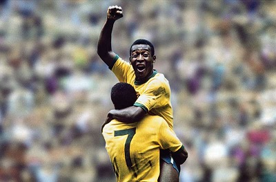
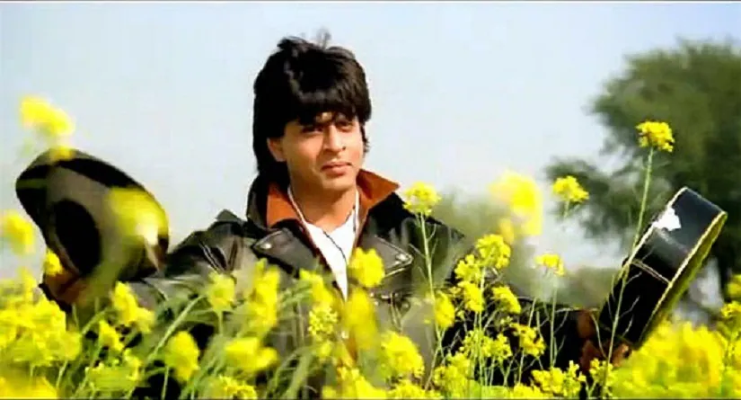
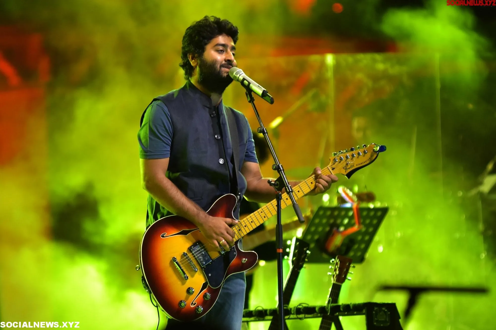
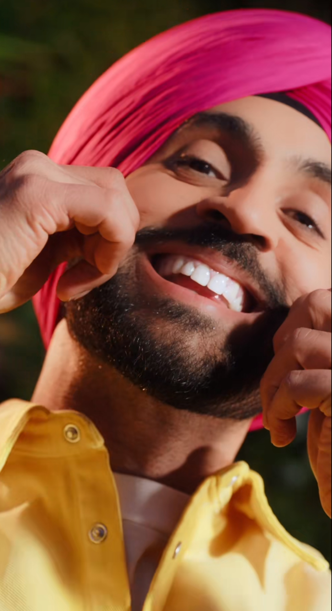

Artifact 1
Ergonomic Setup DocumentErgonomic Setup
So, picture Ronaldo doing his "calma calma" dance, right? That's like him saying, "Chillax, folks, I got this!" Just like how we gotta chill with our workspace setups. You know, comfy chairs, desks at the right height, all that jazz. 'Cause let's face it, nobody wants to be squirming around like they're in a game-winning goal celebration just to reach their keyboard! Taking care of ergonomics isn't just about avoiding awkward yoga poses at your desk, it's about keeping us all in tip-top shape while we work. So, let's give a "calma calma" to happy spines and stress-free workdays! The catholic graduate expectation in this document is... "reflects stewardship for personal health and safety, promoting respect for life and dignity."
Artifact 2
 Poster of TOSPoster of TOS
Check out this awesome picture of Pelé scoring Brazil's 1000th goal! It's like, totally epic! This pic shows how important it is to understand those terms and conditions stuff when we're using websites and apps. It's all about making sure we know what we're agreeing to, you know? Plus, just like Pelé celebrates scoring goals, understanding these terms helps us celebrate our digital experiences responsibly. It's like being transparent and ethical in our online adventures! The catholic graduate expectation being reflected in this picture is "emphasizes ethical behaviour and transparency".
Artifact 3
 Choosing the Perfect ISP
Choosing the Perfect ISP
The Best Choice Is...
This is a picture of the famous london rapper, Central Cee when he made a come-back in the industry with a new song, "me and you". It Looks like he's about to drop the hottest album of the year! It's similar to how we gotta pick the right internet plan for our household - it's like finding the perfect for a big night out. This picture shows how we can compare different internet plans, prices, and speeds, just like Central Cee compares beats and rhymes. It's all about flexing those analytical skills and making smart choices, whether it's for streaming tunes to catch a vibe or doing homework. The catholic graduate expectation from this document is that it "reflects critical thinking and informed decision-making".
Artifact 4
 Company Fact SheetCompany Fact Sheet
This picture of SRK doing his famous pose in a flower field is like the king of all poses. Just like SRK knows how to win hearts, this fact sheet shows how our company nails summarizing and sharing important policy stuff for our employees. It's like the superhero guide for knowing what’s what at work. Plus, it helps everyone get along and play nice, just like in a Bollywood movie!
Artifact 5
 Business Letter
Business Letter
Business Letter
This picture of SRK and Hrithik Roshan both doing SRK's famous open-arm pose together is like an explosion of coolness! Just like how these two can totally rock a pose, this employment offer letter shows off our company's epic communication skills. It's super important for formal business interactions and correspondence, making sure everything is crystal clear, respectful, and professional.
Artifact 6
 Business WebsiteBusiness Website
This is a picture of my pookie Arijit Singh singing his heart out at his concert as everyone aws! Just like Arijit knows how to hit all the right notes and make everyone swoon, this website shows off my web design and digital communication skills. It's like the rockstar of online marketing, making sure our digital presence is as smooth as Arijit's voice. Now you may be wondering, how does this artifact reflect the catholic graduate expectations? Well, it encourages creativity and the effective use of technology.
Artifact 7
 Microsoft Excel TestMicrosoft Excel Test
Check out this picture of Diljit Dosanjh totally rocking his new song curling his moustache into a proud-standing W. That's some next-level style game, right? It's kinda like how we gotta ace data stuff in class. Like, who knew analyzing numbers could be as cool as curling a 'stache? But hey, accuracy and thoroughness matter, whether you're slaying fashion trends or crunching data. The catholic graduate expection that's being indicated in this document is that it reflects a commitment to accuracy and thoroughness in work.